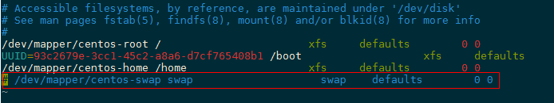
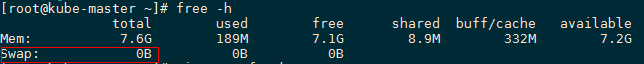
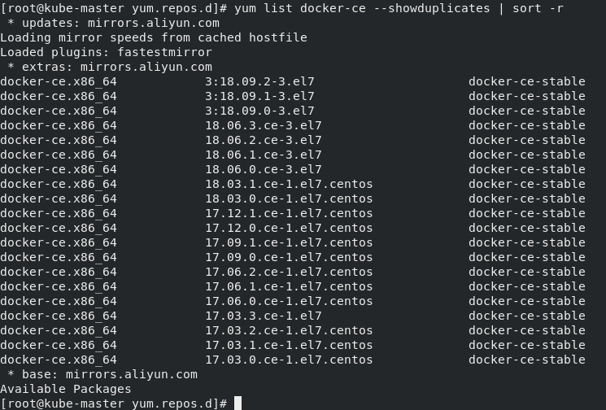
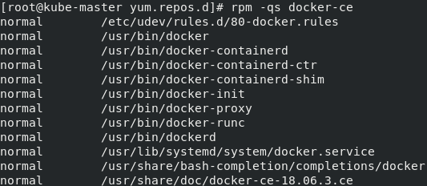
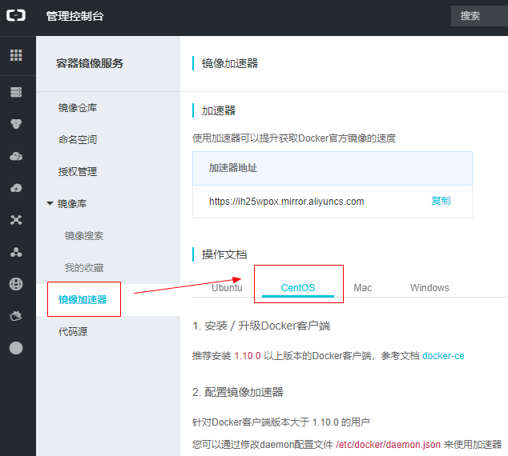
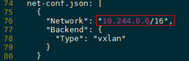
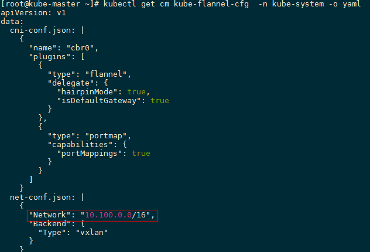
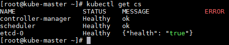
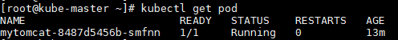

测试环境搭建
（k8s-1.13版本单节点环境搭建）
1. 概述
大家注意哦，不一定要先搭建好环境再看源码，大可以先看一个组件，感觉差不多理解了，想要run一把，想要改几行试试的时候回过头来搭建k8s环境。
当然，大家开始看源码的时候，我相信各位都是搭建过不少次k8s集群，敲过N多次kubectl命令了，所以下面我不会解释太基础的命令是做什么的。
今天我们要做的是搭建一个单机版的k8s环境，用于后面的学习。虽然k8s的环境搭建没有openstack来的复杂，但是由于网络等乱七八糟的问题，在国内手动搭建一个五脏俱全的k8s也不算太容易，一个不小心就会被乱七八遭的障碍磨灭兴趣。今天看看我能不能让大家觉得这个过程无痛吧～
2. kubeadm简介
选择一个好的工具很重要！大家在刚开始学习k8s的时候应该都用二进制文件一步一步搭建过集群吧，那个过程是不是很酸爽？手动一步一步搭建环境对于初学者来说确实大有裨益，可以了解各个组件的细节。我已经懒掉了，我决定从众多k8s自动化安装方案中选择一个来搭建这次的k8s环境。
kubeadm是Kubernetes官方提供的用于快速安装Kubernetes集群的工具，这不是一个单独的项目哦，我们在kubernetes源码里可以看到这个组件（kubernetes/cmd/kubeadm/）：

kubeadm这个工具可以通过简单的kubeadm init和kubeadm join命令来创建一个kubernetes集群，kubeadm提供的其他命令都比较通俗易懂：
kubeadm init启动一个master节点；kubeadm join启动一个node节点，加入master；kubeadm upgrade更新集群版本；kubeadm config从1.8.0版本开始已经用处不大，可以用来view一下配置；kubeadm token管理kubeadm join的token；kubeadm reset把kubeadm init或kubeadm join做的更改恢复原状；kubeadm version打印版本信息；kubeadm alpha预览一些alpha特性的命令。
关于kubeadm的成熟度官方有一个表格：
| Area | Maturity Level |
|---|---|
| Command line UX | GA |
| Implementation | GA |
| Config file API | beta |
| CoreDNS | GA |
| kubeadm alpha subcommands | alpha |
| High availability | alpha |
| DynamicKubeletConfig | alpha |
| Self-hosting | alpha |
主要特性其实都已经GA了，虽然还有一些小特性仍处于活跃开发中，但是整体已经接近准生产级别了。对于我们的场景来说用起来已经绰绰有余！
3. 操作系统准备
我们先使用一个机子来装，后面需要拓展可以增加节点，使用kubeadm join可以很轻松扩展集群。
3.1. 系统信息
- 内存：2G
- CPU：2
- 磁盘：20G
系统版本和内核版本如下所示，大家不需要严格和我保持一致，不要使用太旧的就行了。
# cat /etc/redhat-release
CentOS Linux release 7.5.1804 (Core)
# uname -r
3.10.0-862.9.1.el7.x86_64
3.2. 配置selinux和firewalld
# Set SELinux in permissive mode
setenforce 0
sed -i 's/^SELINUX=enforcing$/SELINUX=permissive/' /etc/selinux/config
# Stop and disable firewalld
systemctl disable firewalld --now
3.3. 系统参数与内核模块
# 修改内核参数
cat <<EOF > /etc/sysctl.d/k8s.conf
net.bridge.bridge-nf-call-ip6tables = 1
net.bridge.bridge-nf-call-iptables = 1
EOF
sysctl --system
# 加载内核模块
modprobe br_netfilter
lsmod | grep br_netfilter
3.4. 配置yum源
# base repo
cd /etc/yum.repos.d
mv CentOS-Base.repo CentOS-Base.repo.bak
curl -o CentOS-Base.repo http://mirrors.aliyun.com/repo/Centos-7.repo
sed -i 's/gpgcheck=1/gpgcheck=0/g' /etc/yum.repos.d/CentOS-Base.repo
# docker repo
curl -o docker-ce.repo http://mirrors.aliyun.com/docker-ce/linux/centos/docker-ce.repo
# k8s repo
cat <<EOF > /etc/yum.repos.d/kubernetes.repo
[kubernetes]
name=Kubernetes
baseurl=http://mirrors.aliyun.com/kubernetes/yum/repos/kubernetes-el7-x86_64
enabled=1
gpgcheck=0
repo_gpgcheck=0
gpgkey=http://mirrors.aliyun.com/kubernetes/yum/doc/yum-key.gpg
http://mirrors.aliyun.com/kubernetes/yum/doc/rpm-package-key.gpg
EOF
# update cache
yum clean all
yum makecache
yum repolist
最终我们可以看到这些repo：

3.5. 禁用swap
swapoff -a
echo "vm.swappiness = 0">> /etc/sysctl.conf
sysctl -p
如上配置，重启后swap又会被挂上，我们还需要注释掉/etc/fstab中的一行配置：

最终看到的结果是这样的（这个截图是下一节搭建集群的时候补到这里的，内存大小和单机的不一样）：

4. 安装docker
先看一下有哪些可用版本：yum list docker-ce --showduplicates | sort -r

- 我们选择一个版本安装：
yum install docker-ce-<VERSION STRING>
- 这里我选择18.06.3，所以我用的命令是：
yum install docker-ce-18.06.3.ce
- 可以用rpm命令看一下docker-ce这个rpm包带来了哪些文件：

- 启动docker：
systemctl enable docker --now
- 查看服务状态：
systemctl status docker
5. 安装kubeadm、kubelet和kubectl
kubeadm不管kubelet和kubectl，所以我们需要手动安装kubelet和kubectl：
yum install -y kubelet kubeadm kubectl --disableexcludes=kubernetes
如果你看到这个教程的时候yum源里已经有了1.14版本的kubeadm，那么要么你装新版本，要么通过上面装docker同样的方式指定1.13版本安装，我这里使用的是1.13.3。
最后启动kubelet：
systemctl enable --now kubelet
6. 镜像准备
6.1. 阿里云镜像加速器配置（可选）
如果访问dockerhub速度不理想，可以选择配置阿里容器镜像加速器。
- 访问阿里云官网：https://www.aliyun.com
- 注册登录（可以使用支付宝直接登录）
- 找到镜像加速器配置页面（如果一时找不到，可以在页面上使用搜索功能）：https://cr.console.aliyun.com/cn-hangzhou/mirrors
- 页面上有详细的配置指南，对着操作就可以了

如果懒得登录阿里云折腾，也可以直接使用我的配置：
mkdir -p /etc/docker
tee /etc/docker/daemon.json <<-'EOF'
{
"registry-mirrors": ["https://ih25wpox.mirror.aliyuncs.com"]
}
EOF
systemctl daemon-reload
systemctl restart docker
6.2. 镜像下载
然后我们就可以下载image，下载完记得打个tag：
docker pull mirrorgooglecontainers/kube-apiserver-amd64:v1.13.3
docker tag mirrorgooglecontainers/kube-apiserver-amd64:v1.13.3 k8s.gcr.io/kube-apiserver:v1.13.3
docker pull mirrorgooglecontainers/kube-controller-manager-amd64:v1.13.3
docker tag mirrorgooglecontainers/kube-controller-manager-amd64:v1.13.3 k8s.gcr.io/kube-controller-manager:v1.13.3
docker pull mirrorgooglecontainers/kube-scheduler-amd64:v1.13.3
docker tag mirrorgooglecontainers/kube-scheduler-amd64:v1.13.3 k8s.gcr.io/kube-scheduler:v1.13.3
docker pull mirrorgooglecontainers/kube-proxy-amd64:v1.13.3
docker tag mirrorgooglecontainers/kube-proxy-amd64:v1.13.3 k8s.gcr.io/kube-proxy:v1.13.3
docker pull mirrorgooglecontainers/pause-amd64:3.1
docker tag mirrorgooglecontainers/pause-amd64:3.1 k8s.gcr.io/pause:3.1
docker pull mirrorgooglecontainers/etcd-amd64:3.2.24
docker tag mirrorgooglecontainers/etcd-amd64:3.2.24 k8s.gcr.io/etcd:3.2.24
docker pull coredns/coredns:1.2.6
docker tag coredns/coredns:1.2.6 k8s.gcr.io/coredns:1.2.6
7. 安装k8s master
tip：下面的ip地址(192.168.19.100)大家需要替换成自己机器上的！
kubeadm init --pod-network-cidr=10.100.0.0/16 --service-cidr=10.101.0.0/16 --kubernetes-version=v1.13.3 --apiserver-advertise-address 192.168.19.100
- --kubernetes-version: 用于指定k8s版本；
- --apiserver-advertise-address：用于指定kube-apiserver监听的ip地址；
- --pod-network-cidr：用于指定Pod的网络范围；
- --service-cidr：用于指定SVC的网络范围；
如上，跑kubeadm init命令后等几分钟。
如果遇到报错，对着错误信息修正一下。比如没有关闭swap会遇到error，系统cpu不够会遇到error，网络不通等等都会出错，仔细看一下错误信息一般都好解决～
跑完上面的命令后，会看到类似如下的输出：
Your Kubernetes master has initialized successfully!
To start using your cluster, you need to run the following as a regular user:
mkdir -p $HOME/.kube
sudo cp -i /etc/kubernetes/admin.conf $HOME/.kube/config
sudo chown $(id -u):$(id -g) $HOME/.kube/config
You should now deploy a pod network to the cluster.
Run "kubectl apply -f [podnetwork].yaml" with one of the options listed at:
https://kubernetes.io/docs/concepts/cluster-administration/addons/
You can now join any number of machines by running the following on each node
as root:
kubeadm join 192.168.19.100:6443 --token i472cq.tr9a81qxnyqc5zj2 --discovery-token-ca-cert-hash sha256:acba957db29e0efbffe2cf4e484521b3b7e0f9d5c2ab7f9db68a5e31565d0d66
上面输出告诉我们还需要做一些工作：
mkdir -p $HOME/.kube
sudo cp -i /etc/kubernetes/admin.conf $HOME/.kube/config
sudo chown $(id -u):$(id -g) $HOME/.kube/config
# flannel (如果上面自定义了pod ip范围，这里需要修改flannel的configmap)
kubectl apply -f https://raw.githubusercontent.com/coreos/flannel/bc79dd1505b0c8681ece4de4c0d86c5cd2643275/Documentation/kube-flannel.yml
flannel的Network修改：如下图，默认是10.244.0.0/16，我这边pod的cidr是10.100.0.0/16，所以下面也改成10.100.0.0/16；

防止kube-flannel.yml下载地址变化留一份本地链接：<点击查看>
创建完后可以看到flannel的configmap如下：

稍等一会，应该可以看到node状态变成ready：
# kubectl get node
NAME STATUS ROLES AGE VERSION
kube-master Ready master 23m v1.13.3
如果你的环境迟迟都是NotReady状态，可以kubectl get pod -n kube-system看一下pod状态，一般可以发现问题，比如flannel的镜像下载失败啦～
当node Ready的时候，我们可以看到pod也全部ready了：

再看一下核心组件状态：

最后注意到kube-master这个node上有一个Taint：
# kubectl describe node kube-master | grep Taints
Taints: node-role.kubernetes.io/master:NoSchedule
默认master节点是不跑业务pod的，我们暂时只有一个node，所以先去掉这个Taint：
# kubectl taint node kube-master node-role.kubernetes.io/master-
node/kube-master untainted
# kubectl describe node kube-master | grep Taints
Taints: <none>
8. 环境验证
我们来跑一个pod，证明环境正常可用了：
写一个yaml：
apiVersion: apps/v1
kind: Deployment
metadata:
name: mytomcat
spec:
replicas: 1
selector:
matchLabels:
app: mytomcat
template:
metadata:
name: mytomcat
labels:
app: mytomcat
spec:
containers:
- name: mytomcat
image: tomcat:8
ports:
- containerPort: 8080
如上内容保存为tomcat-deploy.yaml，执行kubectl create -f tomcat-deploy.yaml，然后看pod状态：

确认了，是熟悉的Running，哈哈，基本算大功告成了！最后我们看一下tomcat服务能不能访问到：

很完美，如果加个svc配置，就能够通过浏览器访问到汤姆猫界面了！